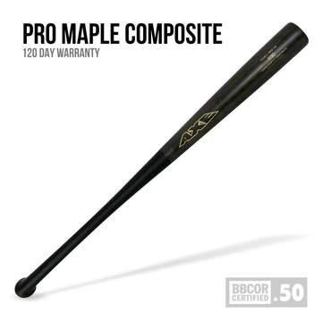

DISCLAIMER: AxeBat is an actual company that makes and sells these bats. I'm a big baseball fan and think these bats are very cool, so I wanted to make a product landing for them. Check out their site here.
Baseball bats designed to replicate the handle of an ax. Improve your hitting with a superior grip! This specilaized design improves speed, control, and power!
Mookie Betts of the Boston Red Sox uses the axe handled bats. In 2018, he was voted the American League Most Valuable Player and helped his team win the World Series, while hitting .346 and slugging .640. He hit 32 homeruns, 5 triples, and 47 doubles.
George Springer of the Houston Astros also uses axe-handled bats. In 2017, he hit 34 homeruns and 29 doubles, and helped the Astros win their first World Series.
